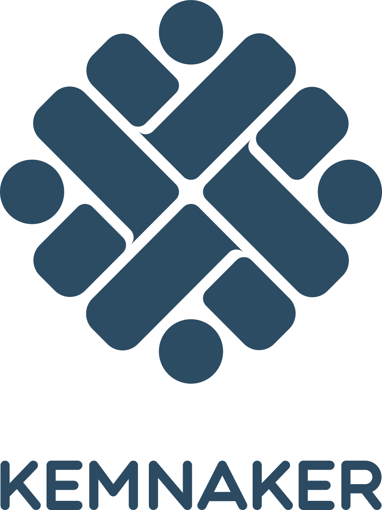

Silakan pilih durasi jam pelajaran (JP) di bawah untuk memuat kurikulum materi audio instruksional.
Sesi kilat fokus orientasi spasial luar keyboard, pangkalan rumah jari (Home Row), dan pengetikan kata tunggal pendek.
Paket dasar ditambah manuver vertikal baris atas dan bawah, angka numerik taktil, serta eksekusi tombol Shift kapital.
Akses kurikulum penuh hingga optimalisasi sistem navigasi berkas, blind drilling kecepatan, dan simulasi dokumen administrasi perkantoran.